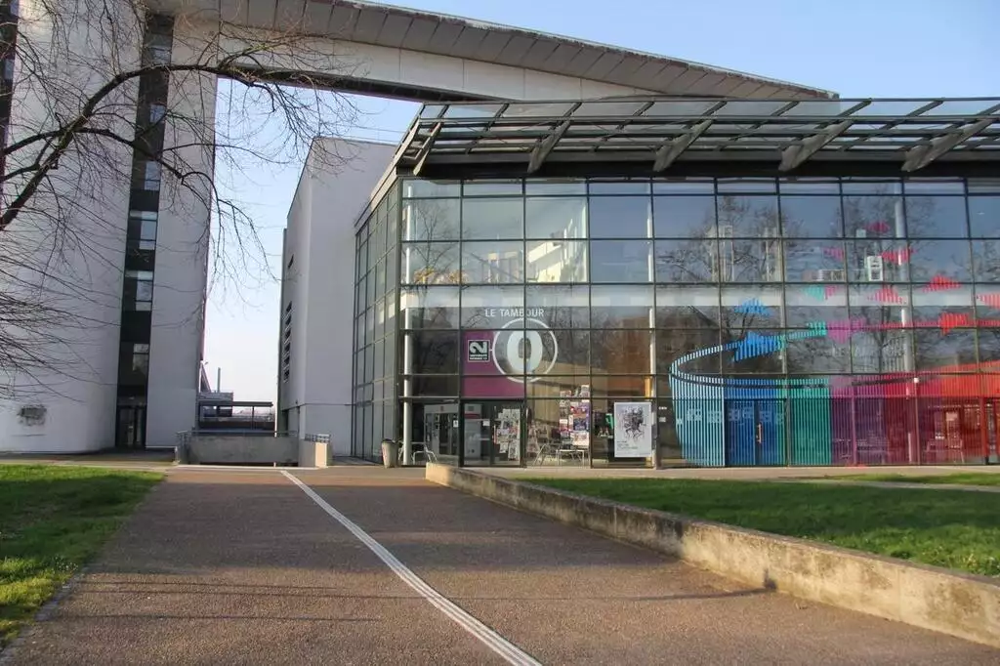

A Propos de nous
Université de Rennes 2
Licence MIASHS

Présentation de la licence
La licence MIASHS est une formation pluridisciplinaire alliant mathématiques, informatique et sciences humaines. Elle offre une solide base scientifique en statistiques et programmation tout en intégrant des enseignements en économie, sociologie et gestion. À la fois généraliste et professionnalisante, elle permet aux étudiants de poursuivre leurs études dans divers domaines (data science, finance, informatique…) ou d’intégrer directement le marché du travail grâce aux stages et compétences en analyse de données.
Noa
Noa Delaporte, étudiant en licence MIASHS, est passionné par l’informatique et l’intelligence artificielle. Curieux et toujours en quête de nouvelles solutions, il aime explorer des techniques permettant de transformer les données en outils interactifs et accessibles. Dans son projet TER sur la visualisation des données de la région Bretagne, il développe le site web et intègre les visualisations, en veillant à offrir une expérience fluide et intuitive.
Sarah
Je m'appelle Sarah Scalart, j'ai 20 ans et je suis actuellement en 3e année de Licence MIASHS. Je suis une personne souriante et déterminée, toujours prête à relever de nouveaux défis. Dans le cadre de ce projet, j'ai contribué à la création du site internet ainsi qu'à la rédaction finale du rapport. Ce travail m'a permis de collaborer efficacement en groupe et a été une expérience très enrichissante, car il s'agissait de mon premier projet concret.
Manon
Manon Floret est étudiante en Licence MIASHS à l'Université de Rennes 2. Intéressée par l'analyse de données et la visualisation, elle participe à ce projet en contribuant à la création de représentations graphiques claires et accessibles. Rigoureuse et adaptable, elle aime mettre ses compétences en avant pour apprendre et explorer de nouvelles approches.
Romain
Romain Cariou, étudiant en Licence MIASHS à l'Université de Rennes 2. Intéressé par la science des données et la data visualisation, il participe à ce projet en contribuant à la création de représentations graphiques claires et accessibles. Curieux et rigoureux, il aime explorer de nouvelles approches pour mieux comprendre et exploiter les données.